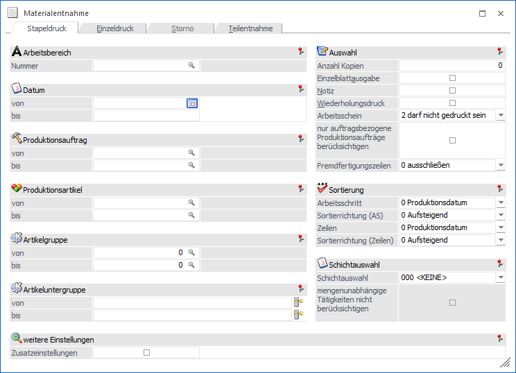
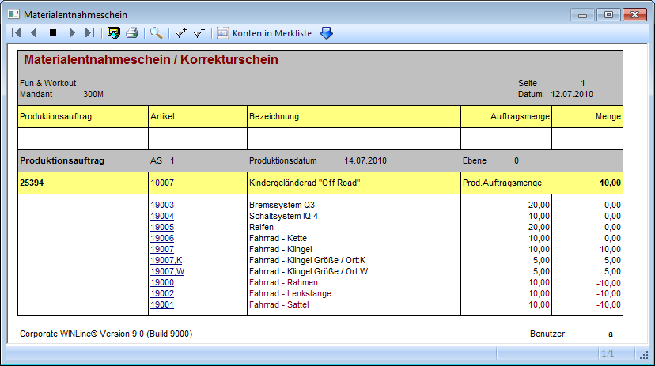

In einem Materialentnahmescheine wird grundsätzlich aufgelistet, welche Artikel (Komponenten) für einen Arbeitsschritt benötigt werden. Die Ausgabe kann neben dem Menüpunkt
1 WinLine PPS
1 Produktion
1 Materialentnahmeschein
auch direkt über den Leitstand (Button "Materialentnahme" bzw. "alle Materialentnahmescheine") initiiert werden.
Achtung
Je nach Einstellungen in den PPS-Parametern kann ein Materialentnahmeschein eine Lagerabbuchung auslösen und / oder die Voraussetzung für einen Arbeitsschein bzw. die Endmeldung sein:
ü Lagerbuchung bei Erstellung einer
Materialentnahme
In den PPS-Parametern (Bereich "Buchungsschlüssel" - Option
"Materialentnahmeschein - Lagerabbuchung") bestimmt werden, ob beim Druck des
Materialentnahmescheins die Komponenten vom Lager abgebucht werden sollen. Falls
nicht, geschieht dieses erst bei der Endmeldung des Auftrags.
Zusätzlich
können auch die Halbfertigprodukte optional mit abgebucht werden (Option
"Hilfsartikel ebenfalls abbuchen"), allerdings ist dabei zu beachten, dass die
Abbuchung nur zum Wert der Summe des Rohmaterials erfolgt und der Wert der
Ressourcen hier noch nicht berücksichtigt wird.
Hinweis
Ist in den Parametern die Abbuchung des Materials aktiviert, wird das Flag "Vorabdruck" in dem Formular (P20W74) des Materialentnahmescheins unterstützt. Über das Flag kann z.B. eine Info ausgegeben werden, dass der Materialentnahmeschein am Bildschirm ausgegeben wurde.
ü Materialentnahmeschein als
Voraussetzung
Ob vor dem Druck des Arbeitsscheins bzw. vor der Endmeldung
eines Produktionsauftrags bereits ein Materialschein erzeugt sein muss, kann in
den PPS-Parametern (Bereich "Ausgabe") über die Option "Materialentnahmeschein"
definiert werden.

Das Fenster untergliedert sich in die folgenden Register, welche in den nachfolgenden Kapiteln detailliert beschrieben werden:
ü Register "Stapeldruck"
In diesem
Register können Materialentnahmescheine für noch nicht abgeschlossene
Produktionsaufträge gedruckt werden. Es werden dabei immer alle offenen
Arbeitsschritte eines Auftrags berücksichtigt.
ü Register "Einzeldruck"
In dem
Register "Einzeldruck" kann ein Materialentnahmeschein für einen bestimmten
Arbeitsschritt eines Produktionsauftrags gedruckt werden.
ü Register "Fehlerliste"
In das
Register "Fehlerliste" wird automatisch gewechselt, wenn die Erstellung des
Materialentnahmescheins für bestimmte Arbeitsschritte nicht möglich ist.
ü Register "Storno"
In dem Register
"Storno" können Materialentnahmescheine, welche bereits als Original gedruckt
wurden, storniert werden.
ü Register "Teilentnahme"
In dem
Register "Teilentnahme" kann ein Materialentnahmeschein für einzelne Artikel
(Komponenten) eines Arbeitsschritts gedruckt werden.
Buttons

Die zur Verfügung stehen Buttons sind immer abhängig von dem aktuellen Register und werden in den jeweiligen Unterkapiteln beschrieben.
Automatische Korrektur
Wurde bereits für einen Arbeitsschritt ein Materialentnahmeschein erzeugt und fand dabei direkt die Lagerabbuchung statt, dann wird bei nachträglichen Änderungen in diesem Schritt, z.B. per Produktionskorrektur, automatischer ein korrigierter Materialschein erzeugt.
Beispiel
In dem Produktionsauftrag 25394 wurde nach dem Druck des Entnahmescheins noch Änderungen vorgenommen (Komponenten "19000", "19002" und "19001" wurden gelöscht).
